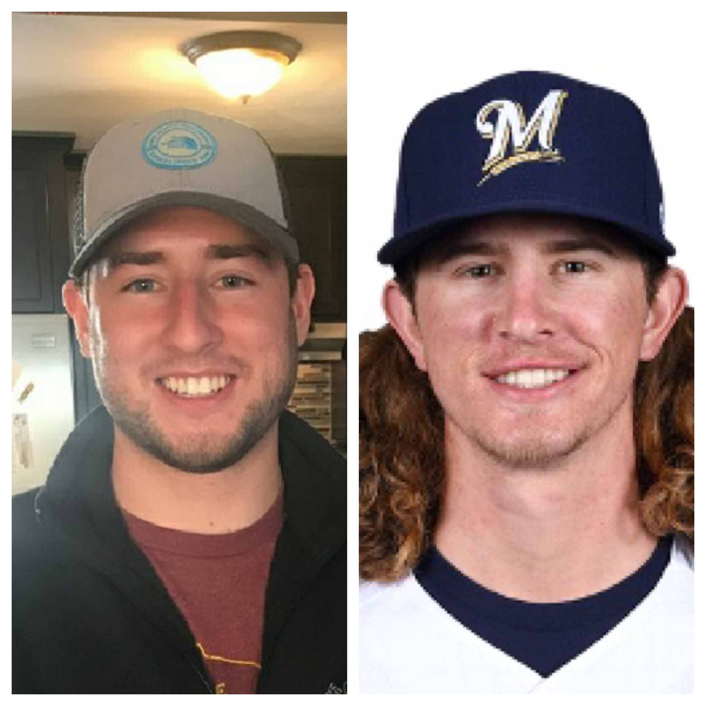
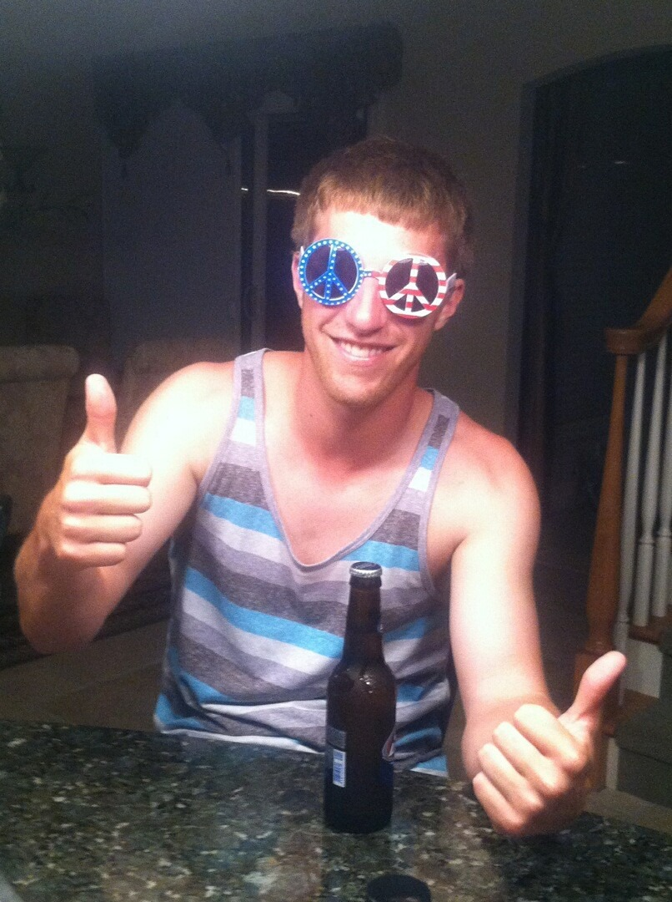
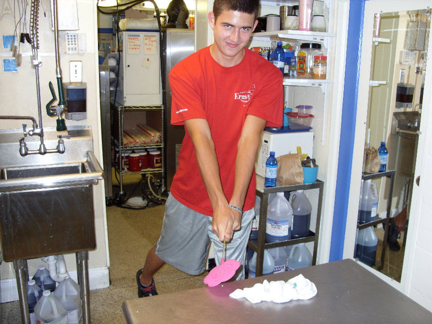
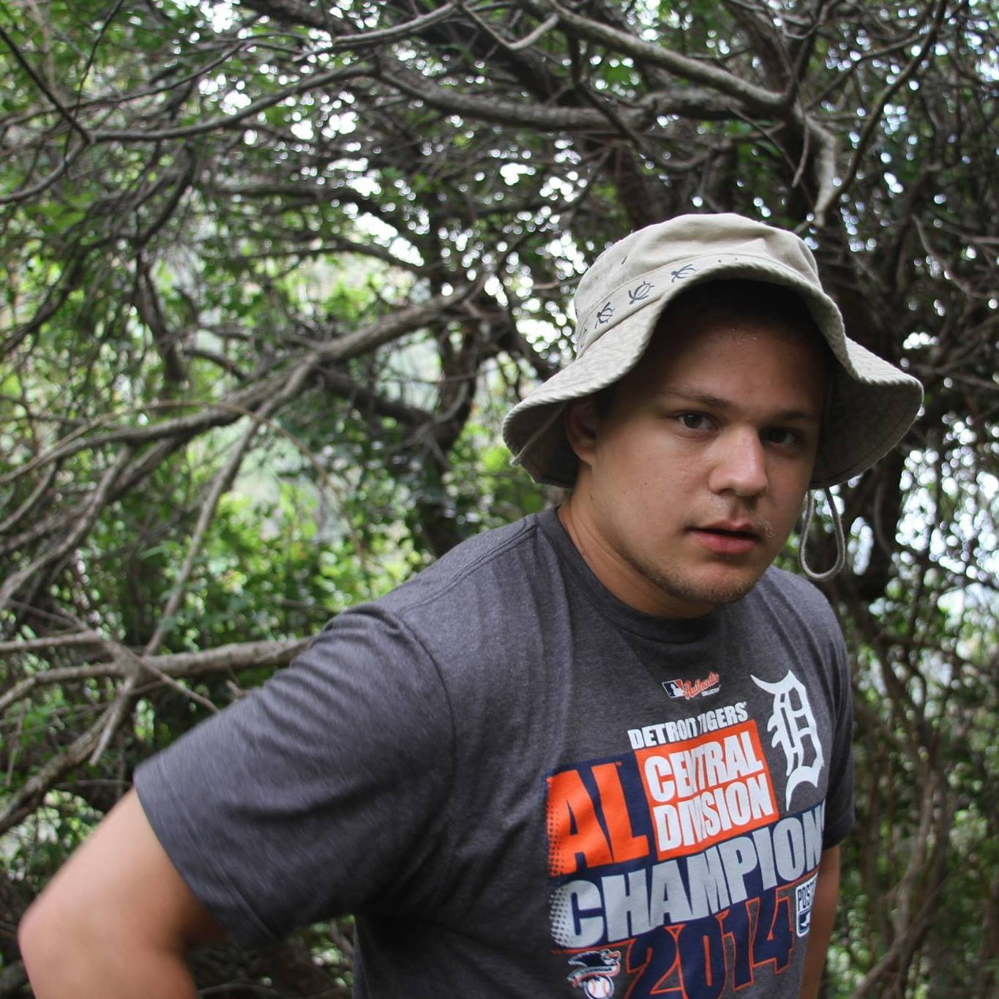
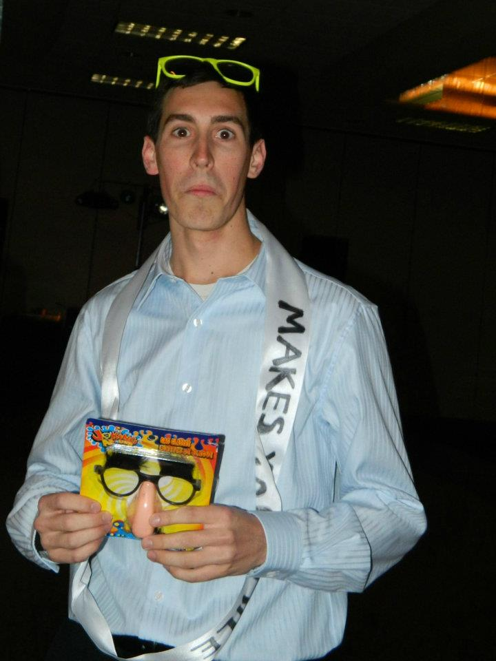
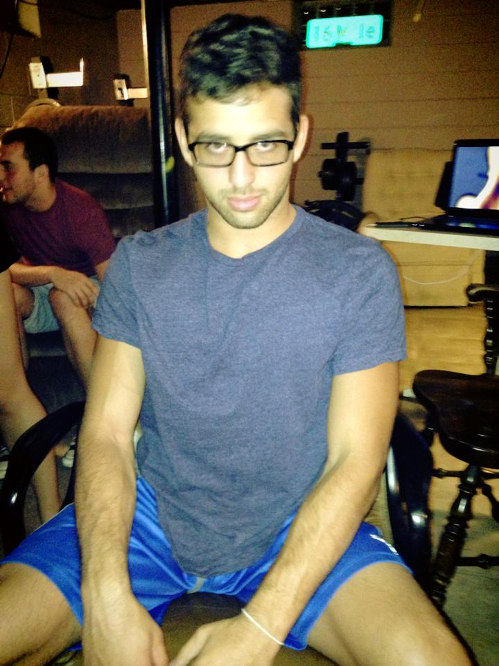

Justin Duvall
HCP: 30 / Shoots: Right
Biggest Weakness: Driver/Irons
Justin will be a married man by the time this weekend comes so hopefully his wife
plans on letting him get in some practice time on the range before the tournament begins.
His game has improved greatly ever since joining the "Beers and Bogeys" golf league, but
the inconsistencies in the tee box are rightfully concerning. We expect Justin to be
taken later in the draft, but could wind up being a steal.
Favorite Serial Killer Doc: Making a Murderer

Dan Pollak
HCP: 8 / Shoots: Right
Biggest Fear: Needles
Dan was one of the strongest players in the field last year, shooting a near under par score at the nightmare.
You have to imagine he will try to continue that momentum into this year, especially playing that course twice.
He has the lower back of an 80 year old man, so it will be interesting to see if it acts up for
him playing 72 holes this year. Dan will be looking to get high and go low this year once more.
2022 RC Record: 3-1

Bill Wojcik
HCP: 8 / Shoots: Right
Favorite PGA Golfer: Justin Thomas
Bill can't seem to get enough of the game of golf after joining the golf League as Taylor Bisnack's
new partner. If his biggest issue is loving the game of golf then what a problem to have. It's still
tough to think of any holes in Bill's game and there is no doubt he will be the Connor Bedard
of this draft as the undisputed #1. His smooth as butter swing is always a treat to watch so at the
very least he will bring that to the table.
2022 RC Record: 1-3
|
Kirk May
HCP: 19 / Shoots: Right
Favorite Kenney Chesney Song: Don't Happen Twice
There are three constants in life: Death, Taxes, and Kirk slicing the ball 50 yards across the fairway.
It remains to be seen if Kirk has fixed his slice in the offseason, but many experts predict that simply isn't
possible. He had a tough go in league last year, but he still gives you pretty much what you can expect out of him which
is steady golf and a wild time out on the course. Kirk is equipped with a whole new bag of clubs this year so that
could change his game exponentially. We expect Kirk to go around the middle of the draft.
2022 RC Record: 1-3

Nick Lopez
HCP: 44 / Shoots: Left
Favorite Food: Steak
Mr. Lopez once again comes into this tournament sporting the highest HCP, but what the scorecards
won't show you is his effort level. Nick is a competitor that will fight till the bitter end even when
things aren't going his way. Sometimes golf challenges your mental toughness and he has a ton of that.
It's always a question mark where exactly someone like Nick will be taken, but we expect Nick to go later in the
draft. He could end up being a late round gem if he can put together a good round or two.
2022 RC Record: 0-4
|

Mike Londeck
HCP: 27 / Shoots: Right
Favorite Actor: Denzel Washington
We have another newcomer to the field here with Michael and his golf game is relatively
unknown to a lot of the players in this tournament. He gets out on the links as much as he can and usually keeps
a pretty upbeat attitude regardless of how he is playing. Equipped with a hand me down driver, Mike is steady
off the tee box, but his irons and fairway woods are mostly inconsistent. He can easily shoot in the 90s when he's on.
He could be the wildcard that goes undefeated this year. We expect Mike to go middle-late in the draft.
2022 RC Record: N/A
|
Ryan Lavoie
HCP: 39 / Shoots: Right
Favorite Cereal: "Wheaties but you can't tell by my physique. Actually Reese's Puffs though"
Another new addition to this years Ryder Cup, Ryan will be looking to show off his team first
mentality during this weekend. He was the ace for many years during high school and college, but
golf has proved to be a bit more difficult than striking out the side. He is largely unreliable off the tee
box but has enough skill within 5 feet that he can be valuable to his team. We expect Ryan to go later in the draft,
but could be a solid assest with his high HCP.
2022 RC Record: N/A
|

Mark Hanna
HCP: 29 / Shoots: Right
Favorite NFL Team (Not Lions): "I don't have one, Lions are my team!!!!"
Mark is a late addition to this years Ryder Cup, but a welcomed one. He is the only other Dad in the field so the dad
strength factor has to be in Captain Ryan Henry's mind. It has yet to be seen how Mark will handle playing 36 holes of golf in
one day, but many experts are saying he is up for the challenge as he has done it before. He has had a decent start to
League so I'm sure he will be looking to take that play into this weekends tournament. It's expected Mark will go later in the draft.
2022 RC Record: N/A
|
Name
HCP: / Shoots:
Info
Bio Main
Extra Info